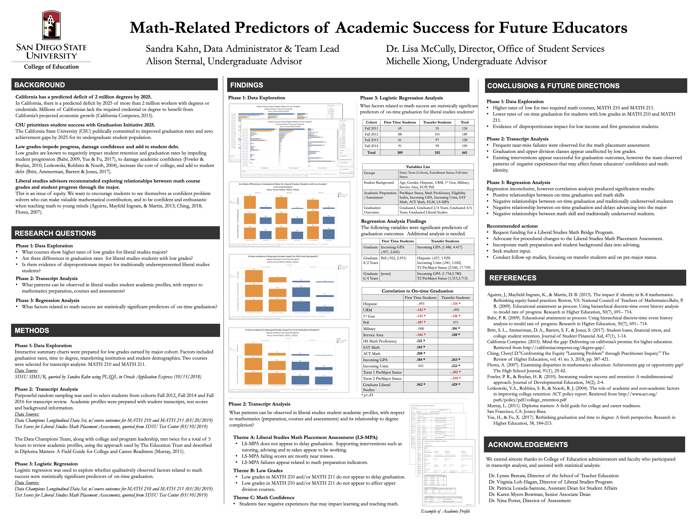
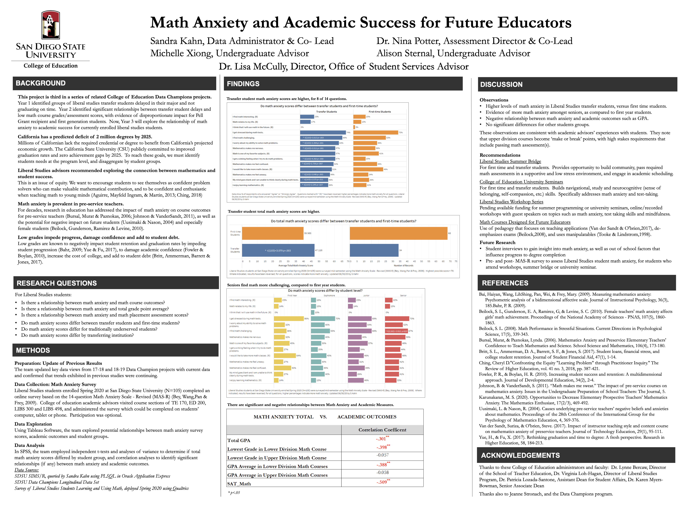

// Case Study — Academic Advising · Institutional Research · 2011–2021
How three years of data
and student stories ended a policy that was harming students.
A three-year, phased mixed-methods investigation into a math placement policy at San Diego State University — from advisor-level observation to institutional policy change.
01 — Project at a Glance
The Data Champions Project
Institution
San Diego State University, College of Education
My Role
Undergraduate Advisor, Phase 2 (Transcript Analysis), College of Education Data Champions team — three-year longitudinal project
Cohort
Liberal Studies majors, Fall 2011–2014 transcript cohort (n=661); follow-up survey (n=105)
Framework
The Education Trust's data framework, transcript analysis, logistic regression, MAS-R math anxiety survey
Methods
Data exploration, transcript review, regression and correlation analysis, follow-up survey
Outcome
Policy changed: students who failed the placement assessment twice could keep retaking it with tutoring support, instead of being permanently blocked from the major
Key Collaborators
02 — The Policy
Two chances to pass, or a full stop.
Liberal Studies majors, SDSU's pipeline for future teachers, had to satisfy a set of "Impaction Criteria" before moving into upper-division coursework: passing the Liberal Studies Math Proficiency Assessment, completing all lower-division and major prep courses, maintaining a minimum 2.70 GPA, and earning at least a C in specific courses (including MATH 210, MATH 211, and MTHED 212).
Of those, the math assessment was where students got stuck. They had exactly two chances to pass it. Miss it twice and they risk not advancing into the major — potentially having to switch majors or delaying graduation.
03 — The Human Cost
It wasn't a knowledge gap. It was a binary line.
As an advisor, I sat across from students who'd missed the cutoff by a single point. It wasn't a knowledge gap — it was a hard, binary line that turned a near-pass into a full stop. The anxiety this created was constant and visible, and it hit transfer students hardest.
The assessment was a prerequisite for upper-division courses, so failing it meant a shrinking set of classes they could register for, all while still learning to navigate a new university.
Our team later confirmed this pattern empirically: assessment failures were overwhelmingly near-misses tied to preparation gaps, not fundamental unreadiness. Transfer students also showed significantly higher anxiety scores than first-time students on the follow-up survey.
04 — The Research
A three-year, phased mixed-methods investigation, alongside advisor observation.
Alongside advisor observations, the Data Champions team ran a phased study that moved from exploratory data review to statistical testing to a direct survey of student anxiety.
Year 1 — Data Exploration
Identified groups of Liberal Studies transfer students delayed in their major and not graduating on time.
Year 2, Phase 1 — Data Exploration
Identified which courses produced high rates of low grades among Liberal Studies majors, and found disproportionate impact on low-income and first-generation students.
Year 2, Phase 2 — Transcript Analysis (my contribution)
Reviewed academic profiles across cohorts (Fall 2011–2014, n=661) using transcripts, test scores, and background data, working alongside the Data Champions team using The Education Trust's framework. This surfaced the pattern of near-miss placement failures and grades in prerequisite courses that didn't actually predict downstream outcomes.
Year 2, Phase 3 — Regression Analysis
Logistic regression and correlation analysis tested whether these math indicators predicted on-time graduation.
Year 3 — Survey
A follow-up study directly measured math anxiety (MAS-R survey, n=105), finding a significant negative correlation between anxiety and GPA, and notably higher anxiety scores among transfer students and seniors.
2018–2019

Research poster summarizing the study's methods and findings. View full size ↗
2020

College of Education Data Champions poster presenting the transcript analysis. View full size ↗
05 — The Counterintuitive Finding
The data didn't support the policy's core assumption.
Low grades in the prerequisite math courses did not delay graduation or affect performance in upper-division coursework, and placement failures clustered as near-misses tied to preparation, not capability.
Making the Case
Before the data even came in, the team had internal debates about whether the assessment made sense at all. If students had already passed MATH 210 and MATH 211 with a C or better, shouldn't that be enough to demonstrate readiness? Why require a separate, high-stakes assessment on top of course grades that were already a requirement?
Evidence Behind the Instinct
The findings gave that instinct evidence behind it. The team's recommended actions explicitly called for procedural change to the placement assessment, and college leadership took that case directly to the math department, backed by the transcript analysis and correlation results.
06 — Outcome
The policy changed: two failed attempts no longer meant a permanent block from the major.
661
Student transcripts reviewed across the Fall 2011–2014 cohort in the transcript analysis phase.
105
Students surveyed in the Year 3 follow-up, measuring math anxiety against GPA.
2x → ∞
Students who failed the placement assessment twice could continue retaking it with tutoring support, rather than being permanently blocked from the major.
What This Proves
As an advisor, I witnessed firsthand how this policy affected students' confidence. That experience, combined with the data, gave our team a strong case for change, and the willingness to raise hard questions when the evidence didn't support existing policy.
07 — Reflection
What I Learned
I didn't have the vocabulary for it then, but this was user advocacy. A policy doesn't have to be intentionally harmful to cause real harm.
This project taught me that being close to the people affected by a system, and being willing to question it even when it's already established, matters just as much as the data behind the argument.